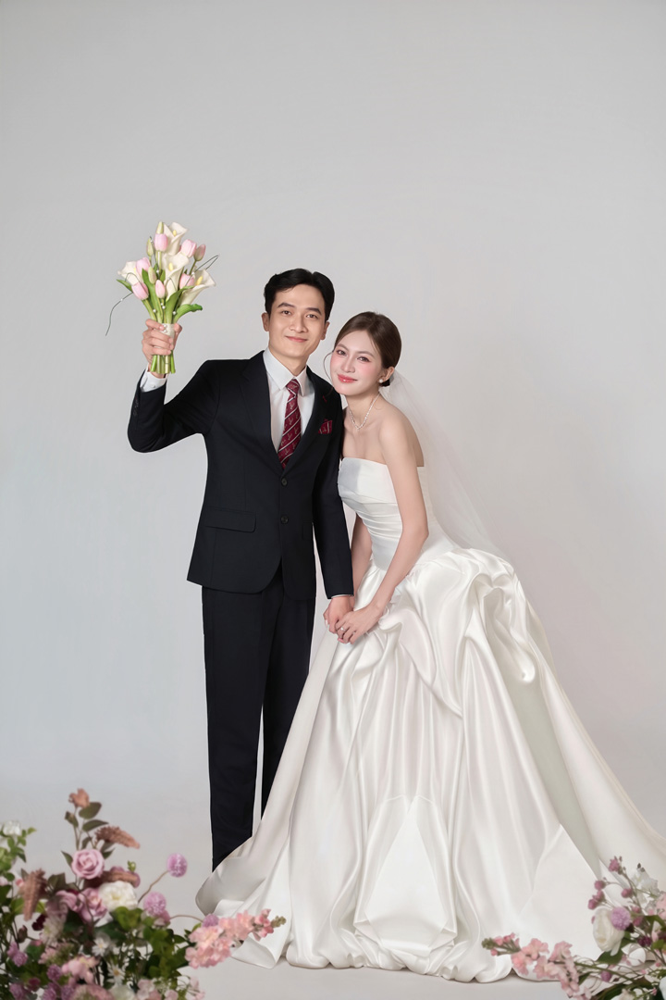
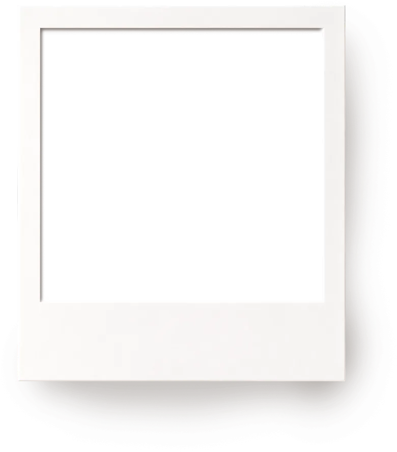
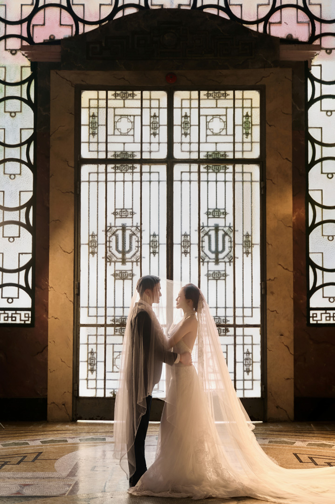

Trần HoàngKhánh Linh
20.12.2026
Nhà trai
Bà. Trương Thị Sơn
Thôn Trúc Hậu, Xã Lưu Vệ, Tỉnh Thanh Hóa
Nhà gái
Ông. Cao Xuân Ninh
Bà. Lê Thị Kim
TDP Vinh Sơn, Phường Sầm Sơn, Thanh Hóa
Trần Hoàng
&
Cao Khánh Linh
Trân trọng kính mời quý khách đến dự buổi tiệc chung vui cùng gia đình chúng tôi tại
Tư gia nhà trai
Thôn Trúc Hậu, Xã Lưu Vệ, Tỉnh Thanh Hóa
CHỦ
NHẬT20 . 12 . 202610:30
(Tức ngày 12 tháng 11 năm Bính Ngọ)
47ngày
18giờ
15phút
04giây
Tháng 12 / 2026
T2T3T4T5T6T7CN
12345678910111213141516171819202122232425262728293031

Love Forever
Two hearts
One journey
A lifetime of love
Timeline

-
8H00
Rước dâu
-
9H00
Lễ Vu Quy
-
10H00
Lễ Thành Hôn
-
10H30
Khai tiệc
Dresscode
+6
Sổ lưu bút
Gửi đôi lời chúc phúc đến cô dâu chú rể nhé!
Hộp mừng cưới
Hẹn gặp bạn trong ngày đặc biệt nhất của chúng mình.
Sẽ thật hạnh phúc khi có bạn ở đó, cùng sẻ chia niềm vui và chứng kiến khoảnh khắc ý nghĩa này của chúng mình.
Thank you!
Chúc hai bạn trăm năm hạnh phúc, mãi yêu nhau như ngày đầu nhé!
Chúc hai cháu xây dựng một tổ ấm thật bình yên và sớm đón tin vui.
Cả hội sẽ có mặt đầy đủ ở tư gia nhà trai nhé!